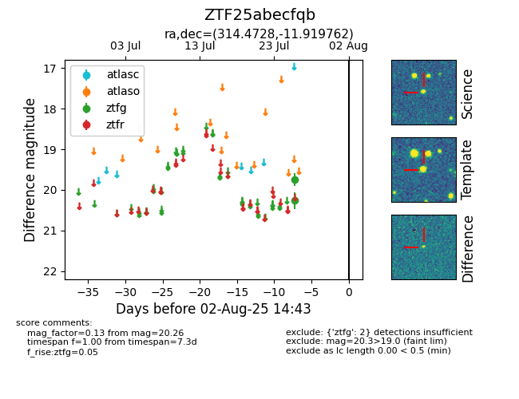

Target ZTF25abecfqb at 2025-08-02 14:43, see:
FINK: fink-portal.org/ZTF25abecfqb
Lasair: lasair-ztf.lsst.ac.uk/objects/ZTF25abecfqb
ALeRCE: alerce.online/object/ZTF25abecfqb
alt names
ZTF25abecfqb (ztf,fink)
coordinates:
equatorial (ra, dec) = (314.4728,-11.91976)
galactic (l, b) = (36.3691,-33.41081)
photometry
last ztfg=20.26
2 ztfg detections
